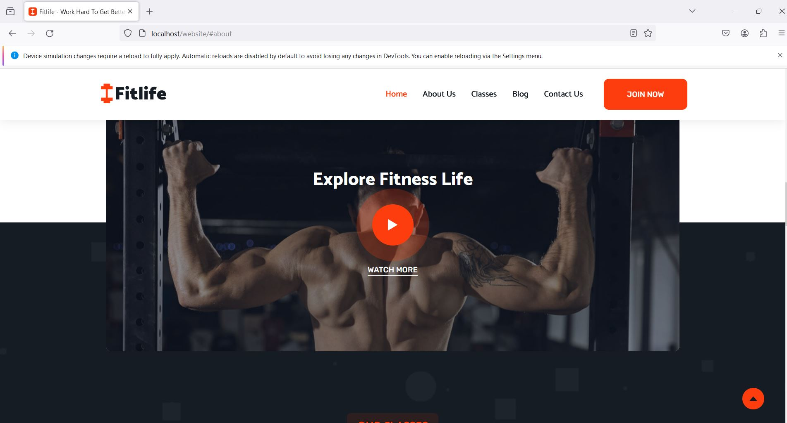

Evaluation of usability and accessibility
Web Browser Support
Our website is rigorously tested across a range of web browsers to guarantee flawless user experiences. We put universal accessibility first across the board, in Chrome, Firefox, Safari, and Edge. This careful testing ensures that users of any a web browser can log in and move our web address reliably. Supporting web browsers is important to us since we're committed to giving everyone access to a welcoming and convenient online experience..
validates HTML and CSS
Our build methods depend strongly on faithfulness to web norms. Our HTML and CSS code is extensively validated to make sure it complies with industry standards. W3C validator tools are used to conduct thorough validation checks in order to find and fix any mistakes or inconsistencies. This commitment to validation guarantees a strong and error-free website while also enhancing compatibility and accessibility across various devices and browsers. We are dedicated to providing a dependable and flawless online experience, which is why we continuously work to validate HTML and CSS. Below is a screenshot of W3C HTML validation report of our index.html
Assessment of Readability
We carefully evaluate readability on our website in order to prioritize user-friendly information. This procedure include assessing the text's readability and simplicity of understanding. We make sure that content is simple to understand for all users by taking into account elements comprised of font size, style, and general presentation. Our focus to readability evaluation is a reflection of our drive for offering inclusive and accessible substances, creating an enjoyable interface for readers with different reading preferences and abilities.
Adaptations were made based on testing outcomes to enhance text legibility.